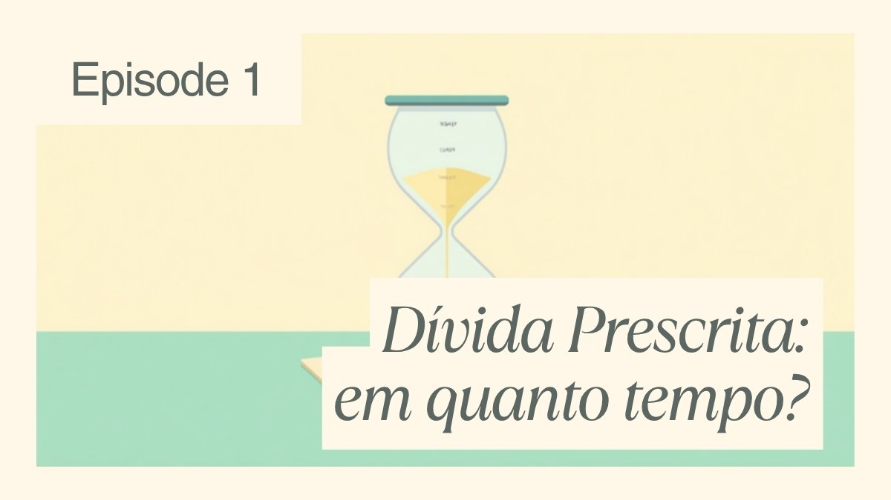

Dívida prescrita: em quanto tempo ela prescreve e o que muda na prática

Você recebeu uma cobrança de uma dívida antiga — de 6, 8, até 10 anos atrás — e ficou na dúvida se ainda pode ser cobrado por ela. A resposta curta é: depende do tipo de dívida e de quando ela venceu. Toda dívida tem um prazo legal depois do qual o credor perde o direito de exigi-la na Justiça. Isso se chama prescrição, e é um dos temas mais mal compreendidos das finanças pessoais — inclusive por quem cobra.
Neste guia você entende os prazos previstos no Código Civil, a diferença entre "dívida prescrita" e "nome limpo" (são coisas diferentes, e essa confusão gera muita dor de cabeça) e o que fazer se uma cobrança antiga chegar até você.
O que significa, na prática, uma dívida "prescrever"
Prescrever não significa que a dívida desaparece ou que ela nunca existiu. Significa que o credor perde o direito de cobrar essa dívida na Justiça. Juridicamente, a obrigação continua existindo como uma "obrigação natural" — ou seja, se você pagar voluntariamente uma dívida prescrita, esse pagamento é válido e você não pode pedir o dinheiro de volta depois. O que muda é que o credor não pode mais forçar o pagamento por meio de uma ação judicial de cobrança.
Essa regra existe porque o sistema jurídico entende que, depois de um tempo razoável sem cobrança, é preciso dar estabilidade às relações — o credor que "dorme" sobre o próprio direito por anos perde a via judicial para exercê-lo.
Quanto tempo leva para cada tipo de dívida prescrever
O prazo de prescrição está definido no Código Civil (Lei nº 10.406/2002). A regra geral está no art. 205: 10 anos, aplicada sempre que a lei não fixar um prazo menor para aquele tipo específico de obrigação. Os prazos mais curtos e mais comuns no dia a dia do consumidor estão no art. 206:
| Tipo de dívida | Prazo de prescrição | Base legal |
|---|---|---|
| Regra geral (quando não há prazo específico) | 10 anos | Código Civil, art. 205 |
| Dívida líquida em contrato particular ou público (cartão de crédito, empréstimo pessoal, financiamento, cédula de crédito bancário) | 5 anos | Código Civil, art. 206, §5º, I |
| Reparação civil (indenização por dano) | 3 anos | Código Civil, art. 206, §3º, V |
| Cheque — execução do título | 6 meses após o prazo de apresentação | Lei do Cheque (7.357/1985), art. 59 |
| Cheque — ação de enriquecimento sem causa | 2 anos | Lei do Cheque, art. 61 |
| Cheque ou nota promissória — ação sobre o negócio que originou o título | 5 anos | Código Civil, art. 206, §5º, I |
Na prática, a maioria das dívidas de consumo que geram cobrança recorrente — fatura de cartão em aberto, empréstimo pessoal, financiamento sem garantia — se enquadra no prazo de 5 anos, por serem dívidas líquidas (valor certo) documentadas em contrato. Já uma ação judicial de cobrança de cheque tem prazos bem mais curtos, o que surpreende muita gente.
Regra prática: o prazo de prescrição não começa na data em que você fez a compra ou assinou o contrato — começa a contar a partir do vencimento não pago, ou seja, do dia seguinte à data em que a dívida deixou de ser paga.
Dívida prescrita não é a mesma coisa que "nome limpo"
Esse é o ponto que mais confunde. São duas regras diferentes, com prazos e efeitos diferentes:
- Prescrição da dívida (Código Civil) — regula até quando o credor pode processar você para cobrar o valor;
- Permanência no cadastro de inadimplentes (Serasa, SPC, Boa Vista) — regulada pelo Código de Defesa do Consumidor, art. 43, §1º, que limita em 5 anos o tempo que uma informação negativa pode ficar no seu CPF, contados a partir do vencimento da dívida não paga. Depois desse prazo, o órgão de proteção ao crédito deve retirar a anotação de ofício — independentemente de a dívida ter sido paga ou não.
O Superior Tribunal de Justiça consolidou esse entendimento na Súmula 323: o nome do consumidor pode ficar negativado por, no máximo, 5 anos, contados do vencimento, e esse limite vale mesmo que o prazo de prescrição da ação de cobrança daquela dívida específica seja diferente. Ou seja, para a maioria das dívidas de consumo, os dois prazos (prescrição de 5 anos do art. 206 e permanência de 5 anos no cadastro) tendem a coincidir — mas juridicamente são fundamentos distintos, e é por isso que às vezes você vê uma dívida sumir do Serasa antes ou depois de "prescrever" tecnicamente.
Posso ser cobrado mesmo depois da dívida prescrever?
Aqui a resposta exige cuidado. Em agosto de 2024, a 3ª Turma do Superior Tribunal de Justiça (REsp 2.103.726, relatoria da ministra Nancy Andrighi) decidiu que a prescrição impede a cobrança da dívida, seja por via judicial ou extrajudicial — ou seja, uma vez prescrita, o credor não pode mais te pressionar a pagar, nem por carta, telefone ou mensagem, sob risco de configurar cobrança indevida.
Mas o mesmo julgado esclareceu um ponto que pega muita gente de surpresa: a prescrição não obriga automaticamente a retirada do seu nome de plataformas de negociação como o Serasa Limpa Nome, porque essas plataformas não são, tecnicamente, um cadastro de inadimplentes — são um ambiente onde credor e devedor podem negociar voluntariamente. Já a negativação em cadastro restritivo de crédito (aquela que derruba seu score) segue a regra dos 5 anos do CDC, independentemente da discussão sobre prescrição.
Resumindo na prática: se uma dívida prescreveu e, mesmo assim, seu nome continua negativado nos birôs de crédito por causa dela há mais de 5 anos do vencimento, essa negativação é irregular — e pode até gerar direito a indenização por danos morais, dependendo do caso.
A prescrição precisa ser alegada — ela não acontece "sozinha"
Um erro comum é achar que, ao completar o prazo, a dívida some automaticamente de qualquer registro ou processo. Em regra, quando existe um processo judicial de cobrança em andamento, é preciso que você (ou seu advogado, ou a Defensoria Pública) alegue a prescrição na defesa — o juiz normalmente não a reconhece de ofício em ações de cobrança de dívida de consumo. Se você for citado em uma ação de cobrança de uma dívida antiga, verificar se o prazo já passou é o primeiro ponto a checar antes de qualquer negociação.
Cuidado: pagar parte da dívida "reinicia o relógio"
Se você reconhece a dívida — por exemplo, faz um pagamento parcial, assina uma confissão de dívida ou até responde a uma cobrança admitindo o débito — o prazo de prescrição é interrompido e recomeça do zero a partir desse ato, conforme o art. 202 do Código Civil. Isso é especialmente importante se você está avaliando negociar uma dívida muito antiga: antes de aceitar qualquer proposta, vale entender se ela já estava perto de prescrever, porque qualquer reconhecimento — inclusive um acordo de parcelamento — zera a contagem.
Devo pagar uma dívida prescrita?
Não existe resposta única. Alguns pontos para considerar:
- Juridicamente, você não é obrigado a pagar uma dívida prescrita — o credor perdeu o direito de exigir esse pagamento na Justiça;
- Se a dívida também já saiu (ou já deveria ter saído) do cadastro de inadimplentes, pagá-la não vai "limpar seu nome", porque ele já está limpo;
- Se, por algum motivo, o registro ainda consta indevidamente, o caminho é pedir a exclusão — não pagar para tentar reativar uma negociação;
- Cada situação tem particularidades (tipo de dívida, se há processo judicial em curso, se o prazo realmente já se completou). Na dúvida sobre um caso concreto, vale buscar orientação de um advogado ou da Defensoria Pública, que atende gratuitamente quem não pode pagar um profissional.
Perguntas rápidas
Depois de 5 anos, meu nome sai do Serasa automaticamente?
Sim, para a maioria das dívidas de consumo — o CDC limita a 5 anos, contados do vencimento não pago, a permanência de qualquer anotação negativa. O órgão de proteção ao crédito deve excluir a informação de ofício ao completar esse prazo.
Se a dívida prescreveu, ela deixa de existir?
Não. A obrigação continua existindo como dívida "natural" — só não pode mais ser cobrada judicialmente. Se você pagar voluntariamente, o pagamento é válido e não pode ser revertido depois alegando prescrição.
Toda dívida prescreve em 5 anos?
Não. Depende do tipo: dívidas líquidas em contrato (cartão, empréstimo, financiamento) prescrevem em 5 anos; reparação civil em 3 anos; a execução de um cheque prescreve em apenas 6 meses após o prazo de apresentação. Quando não há prazo específico na lei, vale a regra geral de 10 anos.
Uma empresa pode me processar por uma dívida já prescrita?
Ela pode até entrar com a ação, mas, se você alegar a prescrição na defesa, o processo tende a ser extinto sem que você seja condenado a pagar. Por isso é importante não ignorar uma citação judicial, mesmo que a dívida pareça antiga demais para ser cobrada.
Se você está lidando com dívidas em aberto, vale complementar esta leitura com o nosso passo a passo para sair das dívidas, que explica como negociar com desconto e reorganizar o orçamento. Depois de resolver as pendências, o próximo passo costuma ser reconstruir o score de crédito — e, se o problema começou no rotativo do cartão, entenda também como escolher um cartão sem anuidade que caiba no seu bolso.